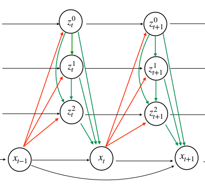
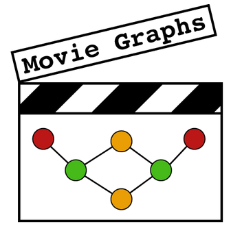
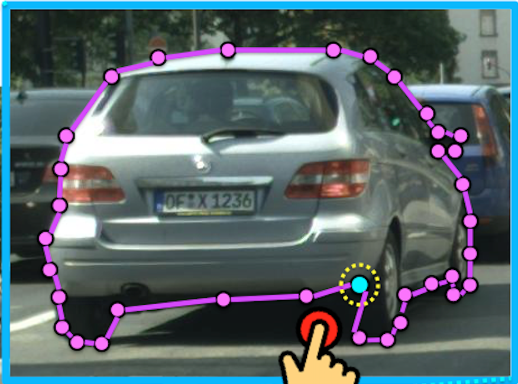
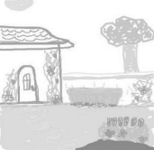

News
- [04/2019] New on Arxiv: Improved VRNNs for Video Prediction
- [06/2018] MovieGraphs selected for a Spotlight presentation
- [09/2017] Cross-Modal Scene Representations got accepted to TPAMI
- [09/2017] I moved to MILA
- [06/2017] Polygon-RNN got the Best Paper Honorable Mention Award
Talks & Slides
- [06/2017] Polygon-RNN @ CVPR 2017
- [02/2017] Domain adaptation & Cross-Modal Scenes @ UofT CSC2539
- [12/2016] Cross-Modal Scene Representations @ UPC Barcelona
- [02/2016] Domain adaptation & Zero-shot learning @ UofT CSC2523
Publications

Improved VRNNs for Video Prediction
L. Castrejón, N. Ballas, A. Courville
Arxiv 2019

MovieGraphs: Towards Understanding Human-Centric Situtations from Videos
P. Vicol, M. Tapaswi, L. Castrejón, S. Fidler
CVPR 2018 - (Spotlight)

Annotating Object Instances with a Polygon-RNN
L. Castrejón, K. Kundu, R. Urtasun, S. Fidler
CVPR 2017 - (Oral) - Best Paper Honorable Mention Award

Cross-Modal Scene Networks
Y. Aytar*, L. Castrejón*, C. Vondrick, H. Pirsiavash, A. Torralba
TPAMI 2017
Learning Aligned Cross-Modal Representations from Weakly Aligned Data
L. Castrejón*, Y. Aytar*, C. Vondrick, H. Pirsiavash, A. Torralba
CVPR 2016